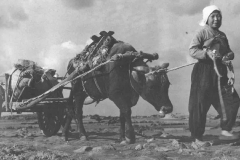
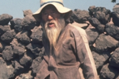
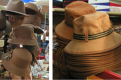

기록에 의하면,
조선시대 영조(英祖) 39년(1763) 안덕면 창천리 사람 강위빙(姜渭聘)이 한양으로 압송되어 심문을 받을 때 입고 갔던 갈옷 덕으로 특별히 사면(赦免)을 받았고, 증보탐라지(增補耽羅誌, 1765)에도 감물을 들인 옷을 농가에서 입었다고 한 것을 보면 그 실용성이 어땠는지 알 수 있다.
일제강점기에도 문헌이나 신문 기행문 등에도 나오고 있어 갈옷을 계속 입어 왔음을 알 수 있다.
-
1910
일제강점기의 제주갈옷과 굴중이
-
문신생(여, 1911년생) 제주시1)
굴중이
-
밭일하는 여인들 (1910년대)2)
갈적삼, 갈굴중이
-
대정읍 농부(1914, 도리이류조 촬영)
-
갈적삼과 갈굴중의 입은 소녀(1914, 삼양동, 도리이류조 촬영)
갈옷은 차츰 노동복으로서의 기능과 시대성이 반영되면서 변하기 시작한다. 크기는 다른 옷에 비해 몸에 맞게, 부속도 간편하게 처리되기 시작한다. 갈적삼은 길, 소매, 깃, 동정, 옷고름으로 구성된다. 옷고름은 매듭[ᄃᆞᆯ마귀] 단추로 달았다. 옷의 크기나 모양은 시대에 따라 남성 것은 큰 변화가 없으나, 여성 것은 1900년대 후반부터 달라진다.
-
-
1940
1940년대 제주갈옷
-
중산간의 주민과 토벌대(1948년)3)
마고자 형태의 갈적삼, 갈중이
-

어느날의 귀가(1949년)4)
마고자 형태의 갈적삼, 갈중이
여성 갈적삼은 1900년대 중반까지 등길이가 짧아서 허리가 노출되고 목은 깃이 감싸므로 답답했다. 단추는 앞여밈으로 하나만 달기 때문에 일할 때는 앞이 벌어져서 불편했다. 남성 갈중이는 대님이나 허리끈 등 부품들은 짧고 가늘게 만들거나 특별히 따로 마련하지 않고 다른 끈을 쓰거나 없으면 새끼줄을 이용하기도 했다. 옷감이 귀하니 아껴야 했고 또한 간편해야 했기 때문이다. 차츰 길이를 짧게 잡아 부리에 끈 사용을 하지 않게 된다.
-
-
1950
1950년대 제주갈옷
-
덩드렁과 덩드렁 막께5)
저고리 형태의 갈적삼, 갈중이
-
연자매6)
마고자 형태의 갈적삼, 갈중이, 갈몸뻬
-
짐 지어 나르기7)
저고리 형태의 갈적삼, 갈몸뻬
-

마차끄는 아낙네(1951)8)
저고리 형태의 갈적삼, 검정 몸뻬
-
-
1960
1960년대 제주갈옷
-
말과 마차의 행렬9)
갈적삼, 갈중이
-
추곡수매10)
갈적삼, 갈몸뻬
-
일주도로 공사(1969)11)
갈적삼, 갈몸뻬
-
서귀포 어항의 아침12)
서양복, 갈몸뻬
1960년대 이후 사회활동이 바뀌면서 마고자가 이용된다. 마고자는 감물을 들인 노동복 갈옷과, 색이나 옷감을 달리한 외출용이 같이 유행한다. 특히 남성용 외출복에는 포켓을 단 것이 특징이다.
-
-
1970
1970년대 제주갈옷
-
오라동 (1971년)13)
저고리 형태의 갈적삼, 갈중이
-

광령리 (1971년)14)
마고자형 갈적삼
-
아라동 묘지 정비(1971년)15)
셔츠, 갈중이
-
도로정비 새마을운동전경(1972년)16)
블라우스, 갈몸뻬
-
정미소에서 알곡 도정하는 일 (1973)17)
갈몸뻬
갈옷은 1970년대까지도 시골에서 일하는 노인들이 입은 것을 볼 수 있었는데, 보릿고개를 넘기면서 차츰 사라지기 시작했다. 그러나 여성용으로 위(上衣)는 개량한복이, 아래(下衣)는 갈몸빼가 주류를 이루면서 이어간다. 한편 남성들은 입다가 낡은 와이셔츠나 체육복, 향토예비군복 등 주로 면(綿) 류로 만든 것들에 감물을 들인 재활용 갈옷이 노동복으로 대체되기 시작한다.
-
-
1980
1980년대 제주갈옷
-
1981년 우도(현용준 촬영)
1980년대는 환경과 향토성을 살리면서 내 것을 찾고 이어가기에 눈을 뜨기 시작한다. 1990년대는 산업화 공업화하면서 실용과 간편함이 요구되었다. 이에 부응하여 화학섬유로 된 서양식 작업복에 옛 갈옷의 정통을 모방하여 감물을 이용한 새 얼굴로 다시 나타나기 시작한 것이다.
-
-
1990
1990년대 제주갈옷
-
갈적삼과 갈중의 입고 일하는 노인(1994년 사계리, 박홍범 촬영)
1990년대도 1970년대부터 시작된 낡은 와이셔츠나 체육복, 향토예비군복 등에 감물을 들인 재활용 갈옷들이 계속 쓰인다. 또한 감물염 옷들이 생활한복 형태로 상품화하여 보급되면서 안정기에 접어든다. 1990년대 후반부터 친환경, 웰빙, 환경지킴이라는 단어가 유행하기 시작하면서 갈옷류가 제주의 상징상품으로 부각된다. 이 때 천연(자연)염색 연구에 관심 있는 사람들이 많아지면서 단체나 개인 여러 곳에서 강습 또는 체험활동을 통해 각기 취향에 맞는 새로운 갈옷과 문화상품들을 만들어 내기 시작했다.
-
-
2000
2000년 이후의 상품화된 제주갈옷과 감물염색 제품
-
생활한복과 현대복식(2001)
제주공항과 제주갈옷업체 매장
-

패션잡화와 침구(2001)
제주공항과 제주갈옷업체 매장
-
감물염색과 감물복합염색 제품(2013)
제주지역 갈옷업체 매장
-
감물염색과 감물복합염색 제품(2021)
제주천연염색기업지원사업
2000년대 들어서는 환경과 건강에 관심이 높아지면서 자연친화적인 갈옷의 우수성과 필요성을 자각하기 시작한다. 국가에서도 갈옷의 전승 보전을 위한 다양한 사업이 시작된다. 2001년 감물염 기능전승자를 지정하기도 했고, 제주문화의 핵심집약체로 10대 문화상징을 선정했는데, 제주도 갈옷이 ‘사회 및 생활유산분야’에서 ‘풋감즙을 들인 노동복으로 제주인의 생활의 지혜가 엿보이는 복식유산’으로 선정되었다.
-
자료 출처
- 고부자, ｢제주도 의생활의 민속학적 연구｣, 서울여자대학교 박사학위논문, 1994, 69쪽.
- 고부자, 앞의 논문, 68쪽.
- 제주특별자치도, 『사진으로 보는 제주역사』 2, 도서출판 각, 2010, 76쪽.
- 제주도, 『제주 100년』, 현대문화인쇄사, 1996, 109쪽.
- 제주대학교 박물관, 『만농홍정표선생 사진집, 제주사람들의 삶』 Ⅱ, ㈜로얄프로세스, 1995, 41쪽.
- 제주대학교 박물관, 앞의 사진집, 19쪽.
- 제주대학교, 『만농 홍정표선생 사진집 제주사람들의 삶』, ㈜일원피앤씨, 2002, 22쪽.
- 제주도, 앞의 사진집, 99쪽.
- 제주특별자치도, 『사진으로 보는 제주역사』 1, 도서출판 각, 2010, 81쪽.
- 제주도여성특별위원회, 『제주여성사 자료총서 I 제주여성, 어떻게 살았을까: 사진자료집』, 2001, 81쪽.
- 제주특별자치도, 앞의 사진집, 213쪽.
- 제주특별자치도, 앞의 사진집, 151쪽.
- 제주연구원 제주학연구센터, 『일본인 인류학자가 본 1971년 제주도』, 경신인쇄사, 2019. 93쪽.
- 제주연구원 제주학연구센터, 앞의 사진집, 218쪽.
- 제주연구원 제주학연구센터, 앞의 사진집, 180쪽.
- 국가기록원,「도로정비 새마을운동 전경(제주도)」,『국가지정기록물 온라인 전시관』, 1972.
- 안장헌, 앞의 블로그.